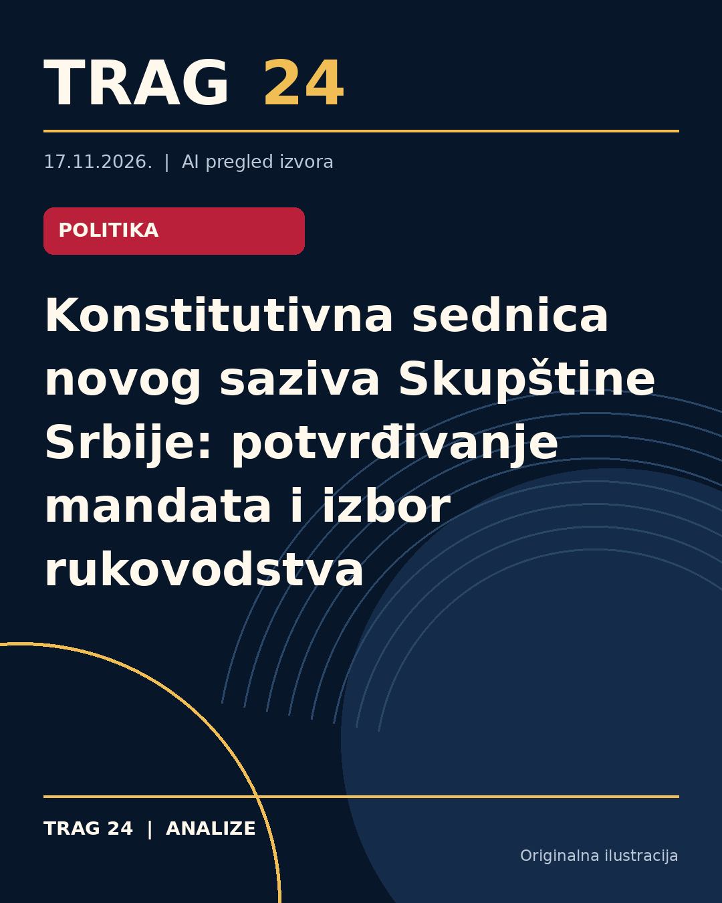

Konstitutivna sednica novog saziva Skupštine Srbije: potvrđivanje mandata i izbor rukovodstva

ŠTA SE DOGODILO
Dana 20. novembra održava se konstitutivna sednica novog saziva Narodne skupštine Republike Srbije. Na dnevnom redu je potvrđivanje mandata narodnih poslanika, izbor predsednika i potpredsednika Skupštine, imenovanje generalnog sekretara, kao i izbor članova radnih tela i stalnih parlamentarnih delegacija u međunarodnim institucijama.
HRONOLOGIJA
Sednicu je, u skladu sa Poslovnikom, sazvala predsednica dosadašnjeg saziva Ana Brnabić. Do izbora novog predsednika sednicom će predsedavati najstariji poslanik Stojan Radenović. Pre sednice održane su konsultacije sa predstavnicima Studentske liste, liste 'Aleksandar Vučić-Ujedinjena Srbija' i manjinskih stranaka, na kojima nije postignut dogovor oko broja potpredsedničkih mesta i predsednika radnih tela. Nakon potvrđivanja mandata, poslanici polažu zakletvu, a potom počinje izbor rukovodstva. Procedura izbora podrazumeva predlog kandidata od najmanje 30 poslanika, pretres kandidata, a izbor može biti javno ili tajno glasanje. Broj i kandidati potpredsednika donose se na osnovu posebne odluke.
ŠTA NAVODE IZVORI
Prema izvornim izvorima, Studentska lista je istakla važnost brzog i efikasnog procesa verifikacije mandata i javnog glasanja za izbor rukovodstva. Nosilac liste Ujedinjena Srbija Aleksandar Vučić najavio je predlog Stojana Radenovića za predsednika Skupštine. Uočen je nesklad u mišljenjima o broju i raspodeli potpredsedničkih mesta, kao i o praksi vođenja odbora. Srpska napredna stranka naglašava svoje ostvarene mandate i zahteva proporcionalnu zastupljenost. Takođe, spominje se odbijanje prisustva studenata u galeriji Velike sale tokom sednice, što je izazvalo reakcije Studentske liste.
ŠTA JE POTVRĐENO
Potvrđeno je da se sednica održava i da je na dnevnom redu šest tačaka koje uključuju potvrdu mandata poslanika, izbor predsednika i potpredsednika, imenovanje generalnog sekretara, članova radnih tela i parlamentarnih delegacija. Potvrđeno je da će do izbora predsednika sednicom predsedavati najstariji poslanik. Potvrđeni su konačni izborni rezultati sa 140 mandata za Studentsku listu i 103 za listu Ujedinjena Srbija, kao i ukupno sedam mandata manjinskih lista.
ŠTA NIJE POTVRĐENO
Nije potvrđeno ko će konkretno biti izabran za predsednika i potpredsednike Skupštine, kao ni tačan broj potpredsedničkih mesta. Takođe, nema zvaničnih informacija o konačnoj podeli i imenovanjima članova radnih tela niti o eventualnim budućim kompromisima između predstavnika stranaka.
ŠTA OSTАJE OTVORENO: Ostaje nejasno kako će biti rešena razmimoilaženja u vezi sa brojem i raspodelom potpredsedničkih mesta, kao i da li će glasanje biti tajno ili javno. Takođe, ostaje otvoreno pitanje o mogućem prisustvu ili zabrani prisustva predstavnika Studentske liste i drugih grupa tokom sednice, kao i kako će se dalje odvijati parlamentarna saradnja između različitih poslaničkih grupa.
Izvori
- https://www.novosti.rs/vesti/politika/1671882/kinstitutivna-sednica-narodna-skupstina-srbije-najnovije-vesti
- https://www.blic.rs/vesti/politika/konstitutivna-sednica-skupstine-srbije-sest-tacaka-na-dnevnom-redu-bira-se-novo/wxbnppr
- https://n1info.rs/vesti/danas-konstitutivna-sednica-novog-saziva-skupstine-biraju-se-predsednik-i-potpredsednici-potvrdjuju-mandati-poslanika/
Ova analiza je pripremljena uz pomoć veštačke inteligencije na osnovu javno dostupnih izvora. Navodi izvora nisu nužno nezavisno potvrđeni.